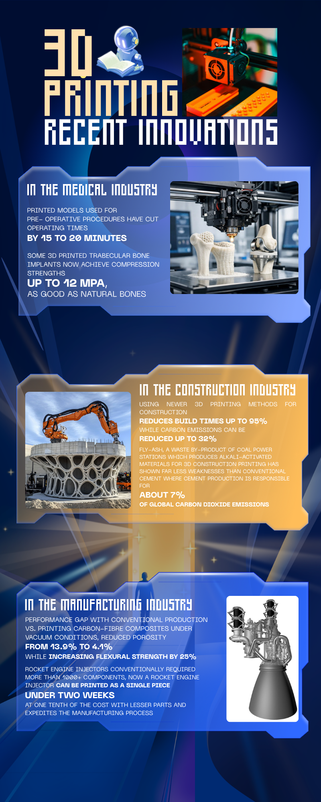

Laser powder-bed fusion, live
3D printing and its recent innovations
Additive manufacturing has left the prototyping lab for operating theatres, construction sites and rocket factories.
NASA prints the GRX-810 alloy at the Powder Processing Lab. Public domain.
{{ f.n }}{{ f.unit }}
{{ f.t }}
{{ s.title }}
{{ s.body }}
{{ s.cta }} {{ s.credit }}
Interactive — drag to rotate
The first tool emailed to orbit
In December 2014 NASA sent a wrench to the International Space Station as a file, not as cargo. Astronauts printed it on board. This is that print file, rendered from NASA's public-domain STL.
- Length
- 114.2 mm
- Layer height
- 0.2 mm — 130 layers
- Triangles
- 14,564
- Source
- NASA, public domain


Every figure, and what weakens it
{{ c.value }}
{{ c.claim }}
The gap is measurement, not machines.
Comparable methods, not faster printers, are what would let these results scale.
One sheet, all three sectors
The figures on this site are spread across three industries that rarely get compared side by side. This summary sheet puts them on one page: what each sector claims, and the numbers behind it.
Designed by Thusal Ranawaka, made with Canva.
